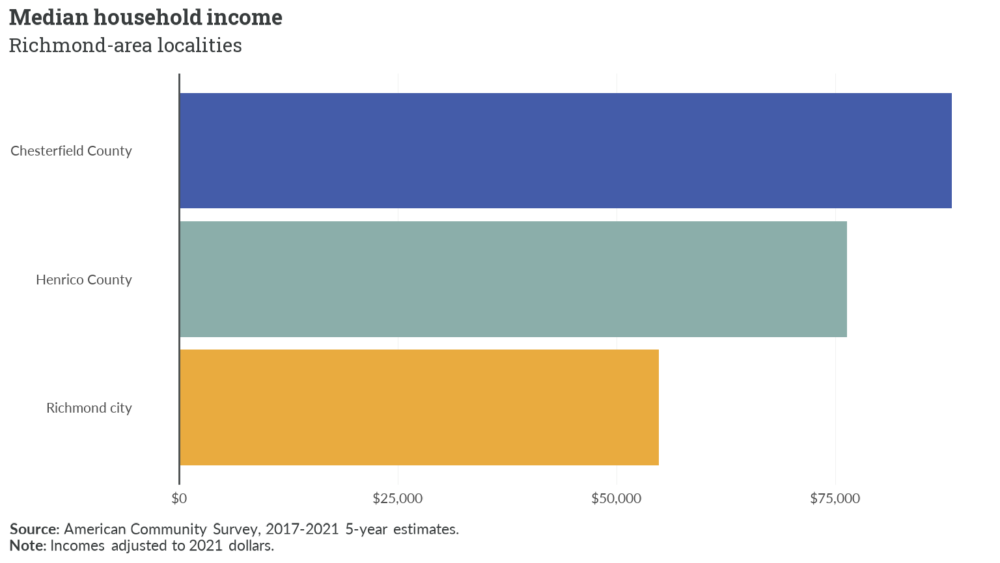
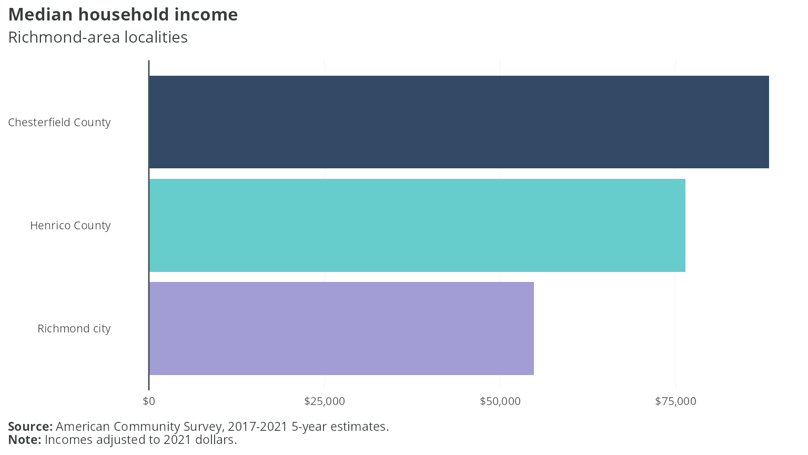
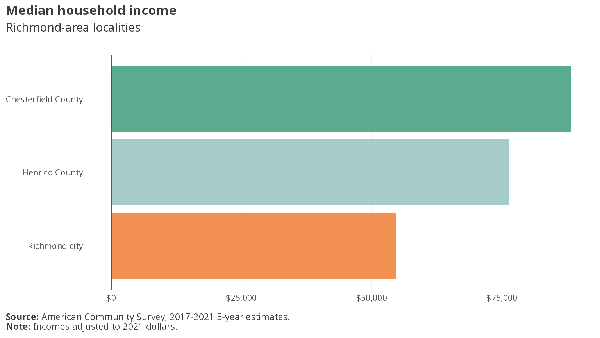
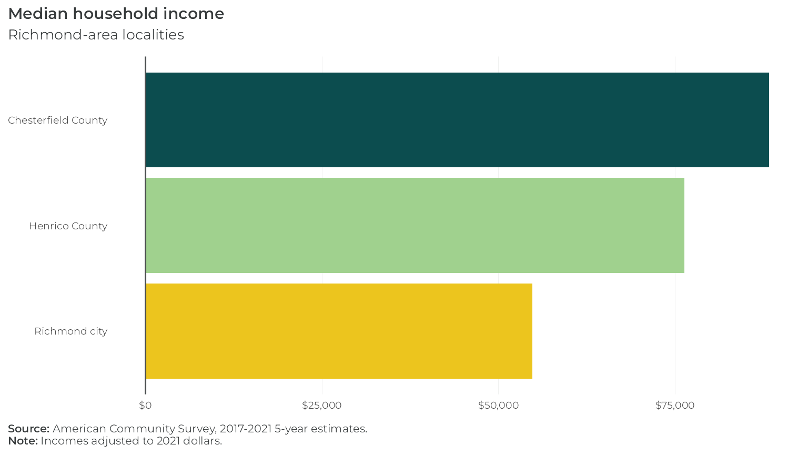
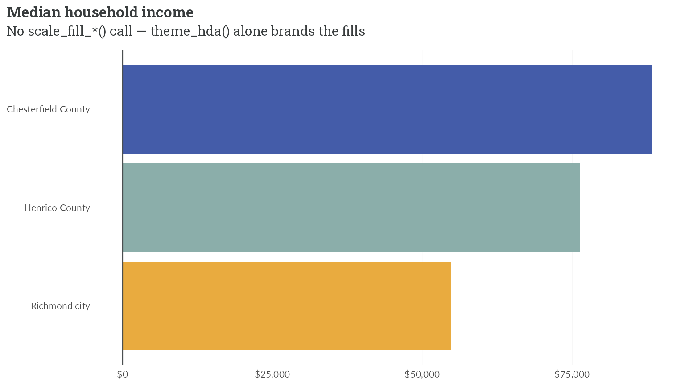

hdatools ships four branded ggplot2 themes — one per client brand —
each pairing a theme_*() with matching
scale_color_*()/scale_fill_*() color scales.
This article builds the same chart in all four so you can see the brands
side by side.
Let’s get some data. This is median household income for three
Richmond-area localities, from the 2017-2021 5-year American Community
Survey (variable B19013_001). It’s bundled here as a static
table, so this article builds without a Census API key or network
access:
library(ggplot2)
library(scales)
library(hdatools)
rva_inc <- data.frame(
NAME = c("Chesterfield County", "Henrico County", "Richmond city"),
estimate = c(88315, 76345, 54795)
)Each plot below differs only in its scale_fill_*() and
theme_*() call. Everything else is identical.
First, an HDAdvisors-branded plot:
ggplot(rva_inc, aes(x = estimate, y = reorder(NAME, estimate), fill = NAME)) +
geom_col() +
scale_fill_hda() +
scale_x_continuous(labels = label_dollar()) +
theme_hda(flip_gridlines = TRUE) +
add_zero_line("x") +
labs(
title = "Median household income",
subtitle = "Richmond-area localities",
caption = "**Source:** American Community Survey, 2017-2021 5-year estimates.<br>**Note:** Incomes adjusted to 2021 dollars."
)
The same chart with HousingForward Virginia branding:
ggplot(rva_inc, aes(x = estimate, y = reorder(NAME, estimate), fill = NAME)) +
geom_col() +
scale_fill_hfv() +
scale_x_continuous(labels = label_dollar()) +
theme_hfv(flip_gridlines = TRUE) +
add_zero_line("x") +
labs(
title = "Median household income",
subtitle = "Richmond-area localities",
caption = "**Source:** American Community Survey, 2017-2021 5-year estimates.<br>**Note:** Incomes adjusted to 2021 dollars."
)
With PHA branding:
ggplot(rva_inc, aes(x = estimate, y = reorder(NAME, estimate), fill = NAME)) +
geom_col() +
scale_fill_pha() +
scale_x_continuous(labels = label_dollar()) +
theme_pha(flip_gridlines = TRUE) +
add_zero_line("x") +
labs(
title = "Median household income",
subtitle = "Richmond-area localities",
caption = "**Source:** American Community Survey, 2017-2021 5-year estimates.<br>**Note:** Incomes adjusted to 2021 dollars."
)
And with VHA branding:
ggplot(rva_inc, aes(x = estimate, y = reorder(NAME, estimate), fill = NAME)) +
geom_col() +
scale_fill_vha() +
scale_x_continuous(labels = label_dollar()) +
theme_vha(flip_gridlines = TRUE) +
add_zero_line("x") +
labs(
title = "Median household income",
subtitle = "Richmond-area localities",
caption = "**Source:** American Community Survey, 2017-2021 5-year estimates.<br>**Note:** Incomes adjusted to 2021 dollars."
)
Under ggplot2 >= 4.0, a bare theme_*() with no
scale_*() call also brands the plot, via the theme-carried
palette. The scale_fill_*() line above is optional when the
brand’s default palette order is what you want:
ggplot(rva_inc, aes(x = estimate, y = reorder(NAME, estimate), fill = NAME)) +
geom_col() +
scale_x_continuous(labels = label_dollar()) +
theme_hda(flip_gridlines = TRUE) +
add_zero_line("x") +
labs(
title = "Median household income",
subtitle = "No scale_fill_*() call — theme_hda() alone brands the fills"
)